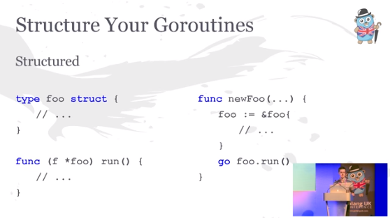

Structured Go-routines or framework-less Flow-Based Programming in Go
I was so happy the other day to find someone else who found the great benefits of a little pattern for how to structure pipeline-heavy programs in Go, which I described in a few posts before. I have been surprised to not find more people using this kind of pattern, which has been so extremely helpful to us, so I thought to take this opportunity to re-iterate it again, in the hopes that more people might get aware of it.
The pattern is very pedagogically explained by Evan Huus (twitter handle anyone?) in his talk about complex pipeline patterns in Go (also from 2015), starting from 30:55 and just 1–2 minutes onward. He explains it very neatly in just a few slides, so I urge you to have a look:
… where this slide summarizes Evan’s Idea:

This is pretty much exactly the idea I have suggested in a post , and a follow-up post on GopherAcademy in 2015, and later packaged up in a helper library I’ve called FlowBase . It is also the exact idea is also the basis of the SciPipe (Github ) batch workflow / pipeline library, for which we recently published a technical preprint paper .
I presented these ideas and results at the Go Stockholm conference 2018 . You can find my slides below, titled Using Flow-based programming to write tools and workflows for Scientific Computing in Go :
There is also a longer post putting the presentation in context, over att pharmb.io .